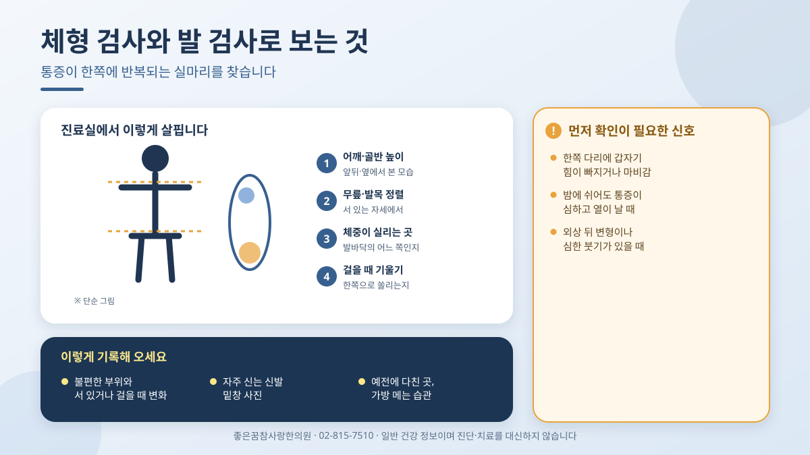

체형 확인은 서 있는 자세에서 어깨·골반·무릎의 균형을, 발 확인은 체중이 어디에 실리는지를 살펴 통증의 이유를 가늠하는 참고 자료로 쓰며, 측정 장비 검사 여부는 방문 전에 문의해 주세요.
여쭙는 것
- 어느 부위가 언제부터 불편한가요?
- 한쪽 어깨가 처지거나 신발 굽이 한쪽만 닳는 편인가요?
- 오래 서 있거나 걸을 때 더 불편한가요?
한의원에서 함께 살필 것
- 몸의 균형이 한쪽으로 기운 것 같은 경우 자세와 발의 상태를 함께 살핍니다.
- 발바닥 통증이나 무릎 통증이 반복되는 경우 발과 하체의 연결을 함께 살핍니다.
- 체형이 걱정되는 경우 전체적인 몸의 균형을 함께 살핍니다.
먼저 확인이 필요한 신호
- 갑자기 한쪽 다리에 힘이 빠지거나 마비감이 오는 경우
- 밤에 쉬어도 통증이 심하고 열이 나는 경우
- 외상 뒤 변형이나 심한 붓기가 있는 경우

체형과 발을 살피는 목적은 통증이 왜 한쪽에만 반복되는지 실마리를 찾기 위해서입니다. 통증이 한 곳에만 있어도 몸 전체의 균형이 영향을 주는 경우가 있습니다. 그래서 진료실에서는 서 있는 자세와 걸음, 발의 모양과 신발이 닳은 모양을 함께 보며 통증의 이유를 가늠하는 데 참고합니다.
왜 이런 불편이 생길 수 있나요
- 한쪽 어깨나 골반이 기울면 반대쪽 근육이 더 오래 버티게 되어 특정 부위만 반복해서 뻐근할 수 있습니다.
- 발바닥 아치 모양이나 체중이 실리는 위치가 달라지면 무릎과 골반, 허리까지 부담이 이어지기도 합니다.
- 오래된 발목 부상이나 한쪽으로 메는 가방처럼 생활 습관이 몸의 균형에 흔적을 남기는 경우가 있습니다.
- 다만 체형의 작은 차이는 대부분 사람에게 있어, 통증과 함께 볼 때 의미가 있습니다.

먼저 이렇게 여쭙니다
- 어느 부위가 언제부터 불편한가요?
- 한쪽 어깨가 처지거나 신발 굽이 한쪽만 닳는 편인가요?
- 오래 서 있거나 걸을 때 더 불편한가요?
- 이전에 다친 적이 있나요?
- 오래 걷고 난 뒤 어느 쪽 다리가 더 피곤한가요?
무엇을 살피나요
- 앞뒤와 옆에서 본 어깨 높이, 골반 높이, 척추의 휘어진 정도
- 무릎과 발목의 정렬
- 발바닥에서 체중이 어디에 더 실리는지
- 걷거나 서 있을 때 한쪽으로 기울어지는지
- 측정 장비를 쓰는 검사는 의료기관마다 갖춘 장비가 달라, 필요하면 방문 전에 좋은꿈참사랑한의원에 문의하기

한의원에서 함께 살필 수 있는 경우
- 몸의 균형이 한쪽으로 기운 것 같은 경우 자세와 발의 상태를 함께 살핍니다.
- 발바닥 통증이나 무릎 통증이 반복되는 경우 발과 하체의 연결을 함께 살핍니다.
- 체형이 걱정되는 경우 전체적인 몸의 균형을 함께 살핍니다.
- 한쪽 신발만 빨리 닳는 경우 걸음과 체중이 실리는 방향을 함께 살핍니다.
좋은꿈참사랑한의원에서는 먼저 불편한 자세와 동작을 충분히 듣고, 서 있는 모습과 움직임을 함께 본 뒤 필요하다고 판단될 때 추나·침·약침 등을 상태에 맞춰 정합니다. 귀가 전에는 집에서 해 볼 동작과 다음에 확인할 일을 알려 드립니다.
이렇게 기록해 오시면 상담이 쉬워집니다
- 불편한 부위와 오래 서 있거나 걸을 때의 변화
- 자주 신는 신발(밑창 닳은 모양을 사진으로 찍어 오면 좋습니다)
- 예전에 다친 발목·무릎·허리
- 한쪽으로 메는 가방, 다리 꼬기 같은 습관
- 최근 늘어난 운동이나 걷는 양

이런 증상은 먼저 확인이 필요합니다
- 갑자기 한쪽 다리에 힘이 빠지거나 마비감이 오는 경우
- 밤에 쉬어도 통증이 심하고 열이 나는 경우
- 외상 뒤 변형이나 심한 붓기가 있는 경우
복용 중인 약은 처방한 의사와 상의 없이 줄이거나 끊지 않습니다. 위 신호가 있거나 갑자기 심해지면 한의원 진료를 기다리지 말고 119나 가까운 응급실을 이용하세요.
한눈에 보는 표
| 구분 | 핵심 |
|---|---|
| 여쭙는 것 | 어느 부위가 언제부터 불편한가요? 한쪽 어깨가 처지거나 신발 굽이 한쪽만 닳는 편인가요? |
| 한의원에서 함께 살필 것 | 몸의 균형이 한쪽으로 기운 것 같은 경우 자세와 발의 상태를 함께 살핍니다. 발바닥 통증이나 무릎 통증이 반복되는 경우 발과 하체의 연결을 함께 살핍니다. |
| 먼저 확인이 필요한 신호 | 갑자기 한쪽 다리에 힘이 빠지거나 마비감이 오는 경우 밤에 쉬어도 통증이 심하고 열이 나는 경우 |
자주 묻는 질문
검사만 받아도 되나요?
증상과 경과를 함께 묻는 것이 먼저이고 검사는 참고 자료입니다.
체형이 틀어져 있으면 모두 문제인가요?
대부분 약간씩 차이가 있어 통증이나 불편과 함께 보고 판단합니다.
깔창은 꼭 필요한가요?
필요 여부는 발의 상태와 불편에 따라 달라 상담 후 정합니다.
체형은 사진으로 미리 보내도 되나요?
사진만으로 판단하기는 어려워 방문해서 서 있는 자세와 움직임을 직접 보며 살핍니다.
이 글은 일반적인 건강 정보이며 개인의 진단이나 치료를 대신하지 않습니다. 증상이 있거나 복용 중인 약이 있다면 진료를 통해 확인하세요. 치료 효과는 개인마다 다를 수 있습니다.
작성 기준: 일반적으로 알려져 있는 건강 정보를 참고해 정리했습니다(대표원장 감수). 증상 기록은 1~2주 동안 하루 1회, 비슷한 시간에 적어 오시면 지난 상태와 비교하기 쉽습니다.
좋은꿈참사랑한의원은 재진 때 지난번 이야기부터 이어서 여쭙니다. 진료시간과 예약은 오시는 길에서 확인하세요.